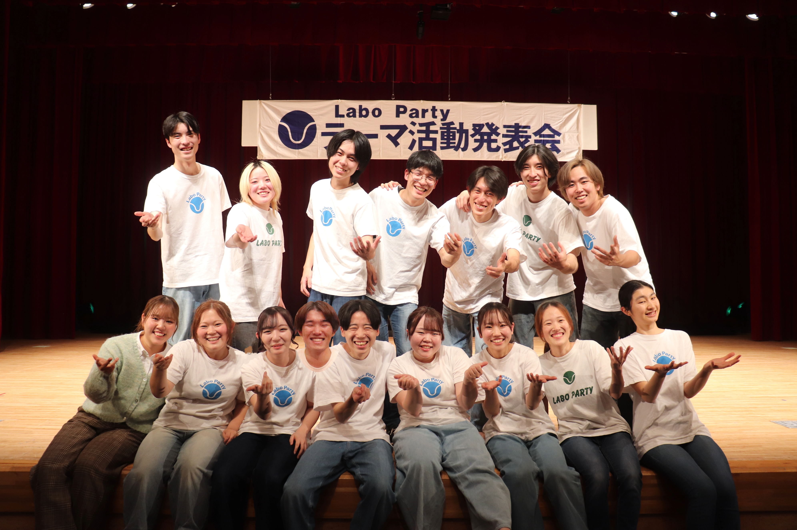
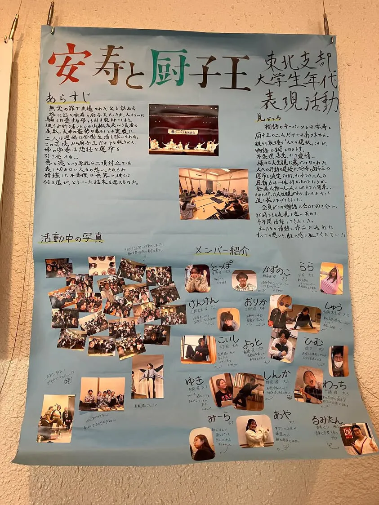

東北支部大学生年代表現活動
『安寿と厨子王 ANJU and ZUSHIーOO』（SK25 DISK 2）

あらすじ
無実の罪を着せられ、左遷された父を訪ねる旅に出た安寿と厨子王。その道中、人さらいに騙され、愛する母とも引き裂かれてしまう。
彼らを待ち受けていたのは、山椒大夫という長者の屋敷。長者の豪勢な暮らしとは裏腹に、二人は過酷な労働を課され、困窮した生活を強いられる。
この苦境から愛する弟の厨子王だけでも救うべく、姉の安寿は悲壮な覚悟を決断する...
コメント
こんにちは！東北支部です。
この物語のキーパーソンは、安寿と厨子王の二人だけではありません。彼らを取り巻く「人々の選択」こそが、物語の鍵となります。
不条理、善意、そして愛情...。様々な人生観に基づいてなされた人々の選択の連続が、安寿と厨子王の運命を決定づけます。彼らが何を思い、どんな背景をもってその道を選んだのか、私たちは深く掘り下げてきました。
妥協は一切ありません。全員がこの物語に全力で向き合い、納得できる表現を追い求めて半年間活動してきました。
私たちの情熱と、作品に込めたすべての思いを、ぜひ会場で肌で感じ取ってください。
当日写真
支部's模造紙

対談企画 後日回答
A1.質問ありがとうございます！！！私たちは、日本のお話を英語のみで伝えるということに魅力を感じたためです。もちろん、せっかく日本の舞台だから日本語も言いたいという意見が出ましたが、あえて英語で日本を表現することで味のある発表になると考えました。また、英のみは話の展開も早くて間延びを回避でき、そもそも同じ内容を2回言うことに抵抗があったという理由もあります。
A2.質問ありがとうございます！！！今回のテーマは安寿と厨子王であり、人々の営みに注目してもらうのが目的でした。だから、意図的ではありませんが、自然と派手な動きのある背景は採用しなかったのだと思います。役をどう際立たせるのかを重視し、その中で最大限の動きを考えていました。
A3.質問ありがとうございます！！！タイトルコールはどうするか、私たちは何度も時間をかけて考えました。その過程で、入口として何か伏線を貼ったり、テーマを表したりする案も出てきました。しかし、今回テーマをお話全体を通した一貫性として伝えたく、物語の内容で感じ取って欲しいと思いました。その結果、どれも蛇足のように思え、何もせず一列に並ぶ案が採用されました。